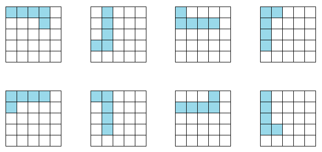
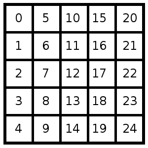

This Christmas, we got a really addictive game called Katamino from our favorite toy store called Marbles. The game is really addictive, and caused hours of head-scratching for the entire family - I would recommend it to anyone in a heartbeat.
The objective of the game is to completely fill a grid with a pre-specified list of pentaminoes, ie., Tetris-like blocks, each occupying 5 squares on the grid. The game is complicated by the fact that each block can be in up to 8 configurations obtained by 4 rotations and a flip. The list of all 8 configurations for one of the pieces are shown below. 
I was stuck on one of the problems (problem 9-A) for a whole day, when I realized that a large part of my approach was primarily trial-and-error. Instead, I decided to code a solver (yes - I cheated :) ). The algorithm is a simple backtracking approach, similar to the ones used for solving Sudoku puzzles.
Although it is possible to automatically generate all the configurations of a piece, I decided to hard-code it for simplicity. Since each piece can fit in a 5x5 grid, the representation is based on the indices which are occupied by the piece in each configuration. A mapping from the squares in the grid to the indices of each square are shown below. 
Using this representation, the different configurations of the "L"-shaped piece shown before can be represented a list of different configurations, where each configuration itself is a list of 5 indices which the piece occupies in that configuration.
piece = [[ 0, 5, 10, 15, 16],
[ 3, 5, 6, 7, 8],
[ 0, 1, 6, 11, 16],
[ 0, 1, 2, 3, 5],
[ 0, 1, 5, 10, 15],
[ 0, 5, 6, 7, 8],
[ 1, 6, 11, 15, 16],
[ 0, 1, 2, 3, 8]]
The code in the file Piece.py sets up the configurations for each of the 12 pieces in this manner, and returns all the pieces as a list. This approach is made a little easier by the fact that not all the pieces need all 8 configurations due to different symmetries possessed by the piece.